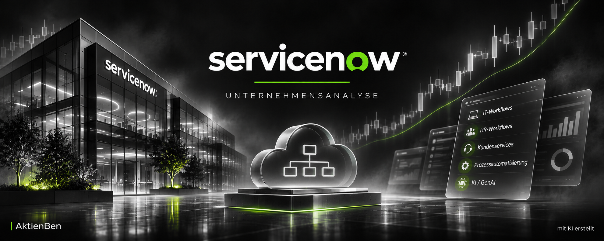
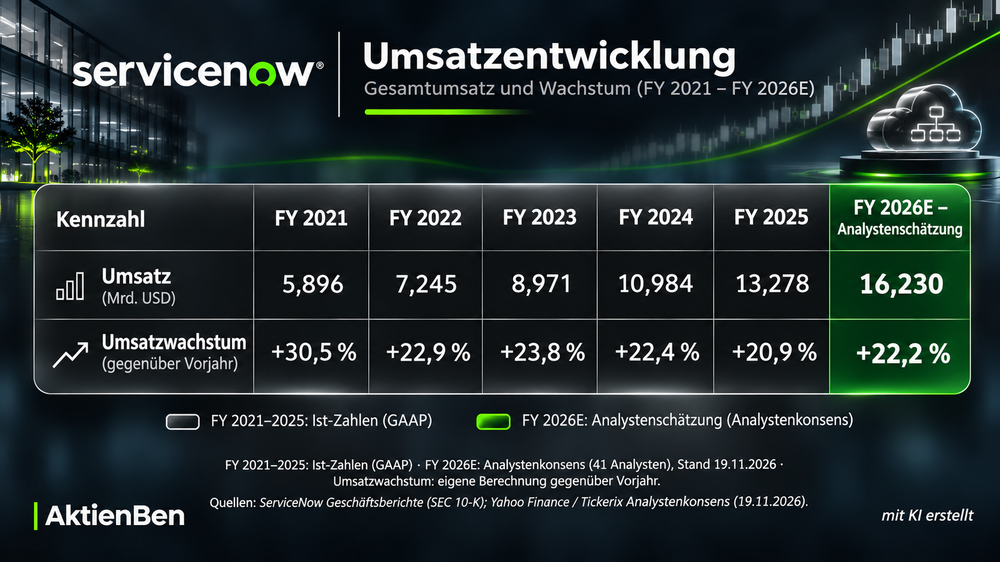
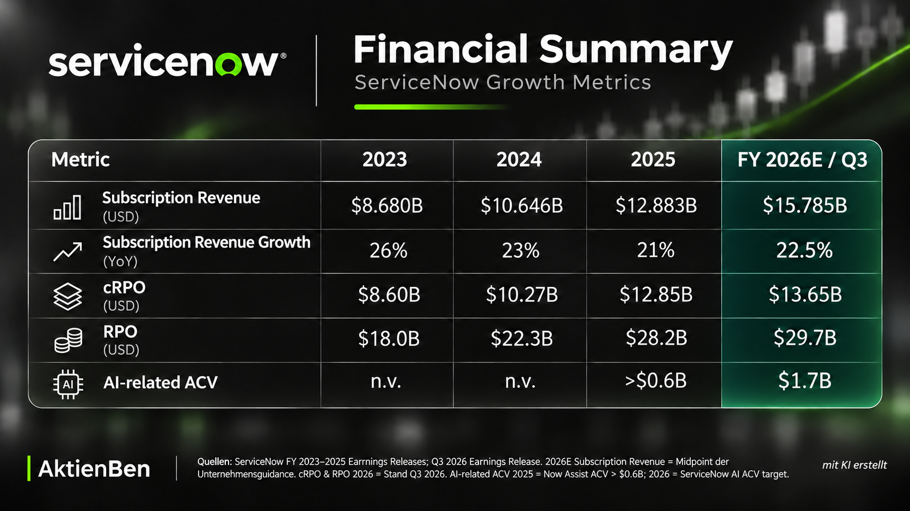
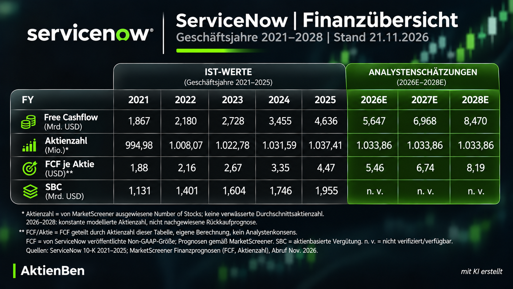
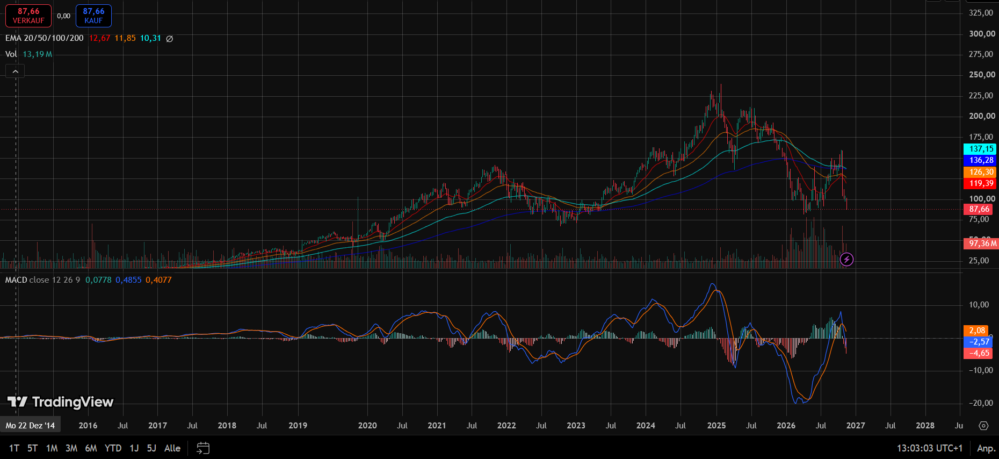

ServiceNow – Einer der größten Profiteure der KI-Revolution?
ServiceNow gehört für mich zu den spannendsten Unternehmen im Bereich der Unternehmenssoftware. Während zahlreiche Technologieunternehmen noch versuchen, künstliche Intelligenz erfolgreich zu monetarisieren, verfügt ServiceNow bereits über eine etablierte, hochprofitable Softwareplattform, die tief in den Geschäftsprozessen großer Unternehmen verankert ist. Besonders interessant finde ich, dass ServiceNow von der zunehmenden Automatisierung gleich mehrfach profitieren könnte. Das Unternehmen kann seine bestehenden Softwarelösungen um KI-Funktionen erweitern, zusätzliche Produkte an bestehende Kunden verkaufen und sich gleichzeitig als zentrale Plattform für die Steuerung intelligenter KI-Agenten etablieren. Dabei sehe ich ServiceNow nicht nur als klassischen Softwareanbieter, sondern zunehmend als einen wichtigen Bestandteil der digitalen Infrastruktur großer Unternehmen.
Wie funktioniert das Geschäft?
ServiceNow wurde ursprünglich durch seine Lösungen für das IT-Service-Management bekannt. Vereinfacht gesagt hilft das Unternehmen seinen Kunden dabei, interne Arbeitsabläufe zu digitalisieren und möglichst effizient zu automatisieren. Ein Beispiel: Ein Mitarbeiter benötigt einen neuen Laptop. Ohne eine zentrale Plattform müssen möglicherweise mehrere E-Mails geschrieben, Genehmigungen eingeholt und unterschiedliche Abteilungen kontaktiert werden. Mit ServiceNow kann dieser gesamte Prozess digital abgewickelt werden. Die Anfrage wird automatisch erfasst, an die zuständigen Personen weitergeleitet und anschließend dokumentiert. Heute bietet ServiceNow Lösungen für IT-Management, Kundenservice, Personalverwaltung, Sicherheitsmanagement und zahlreiche weitere Unternehmensprozesse an. Das Geschäftsmodell basiert überwiegend auf wiederkehrenden Abonnementumsätzen. Kunden bezahlen für die Nutzung der Plattform und können zusätzliche Anwendungen und Funktionen hinzubuchen. Genau darin liegt aus meiner Sicht eine der größten Stärken. Je mehr Prozesse ein Unternehmen über ServiceNow abwickelt, desto wichtiger wird die Plattform für den laufenden Geschäftsbetrieb. Gleichzeitig steigt der Aufwand, sämtliche Anwendungen durch einen anderen Anbieter zu ersetzen. Dadurch entsteht eine extrem hohe Kundenbindung, die ServiceNow langfristig einen erheblichen Wettbewerbsvorteil verschaffen kann. Hinzu kommt die Möglichkeit, innerhalb bestehender Kundenunternehmen weiterzuwachsen. Eine Firma, die ServiceNow ursprünglich nur für ihre IT-Abteilung eingeführt hat, kann die Plattform später beispielsweise auch im Kundenservice oder Personalwesen einsetzen. So kann durch reines Cross-Selling mit jedem Bestandskunden mehr Geld verdient werden. KI-Agenten können zunehmend eigenständig Aufgaben übernehmen, Informationen verarbeiten und Aktionen in verschiedenen Unternehmenssystemen ausführen. Damit das zuverlässig funktioniert, müssen sie allerdings miteinander kommunizieren, auf die richtigen Daten zugreifen und bestehende Sicherheitsvorgaben einhalten. Hier könnte ServiceNow zukünftig eine noch deutlich größere Bedeutung erlangen. Das Unternehmen will zur zentralen Plattform werden, über die Unternehmen ihre KI-Agenten und automatisierten Geschäftsprozesse steuern. Dafür setzt ServiceNow nicht ausschließlich auf eigene KI-Modelle, sondern integriert auch Technologien anderer Anbieter wie Microsoft, Google, OpenAI und Anthropic und arbeitet mit unzähligen Firmen zusammen. Unabhängig davon, welcher Anbieter langfristig die leistungsfähigsten KI-Modelle entwickelt, benötigen Unternehmen weiterhin eine Infrastruktur, über die diese Modelle sicher und effizient eingesetzt werden können. Im Geschäftsjahr 2025 erwirtschaftete das Unternehmen rund 13,28 Mrd. USD Umsatz und konnte damit gegenüber dem Vorjahr um etwa 21 % wachsen. Auch 2026 setzt sich diese Entwicklung fort. Im dritten Quartal stieg der Umsatz um 20,5 % auf rund 4,11 Mrd. USD. Die Abonnementumsätze erreichten 3,99 Mrd. USD und machen damit den überwiegenden Teil des Geschäfts aus. Für ein Unternehmen dieser Größenordnung sind Wachstumsraten von rund 20 % bemerkenswert.

Die Remaining Performance Obligations (RPO) erreichten zum Ende des dritten Quartals 2026 rund 29,7 Mrd. USD. Davon entfielen 13,65 Mrd. USD auf die Current Remaining Performance Obligations (cRPO), also vertraglich zugesicherte Leistungen, die voraussichtlich innerhalb der nächsten zwölf Monate als Umsatz realisiert werden. Die cRPO wuchsen gegenüber dem Vorjahr um 20,5 %. Diese Entwicklung deutet darauf hin, dass ServiceNow nicht nur aktuell stark wächst, sondern auch über eine solide Grundlage für zukünftige Umsätze verfügt. Besonders positiv sehe ich dabei die hohe Profitabilität. Im Jahr 2025 erzielte ServiceNow einen berichteten Non-GAAP-Free-Cashflow von rund 4,64 Mrd. USD. Die entsprechende Free-Cashflow-Marge lag bei 35 %.Für 2026 erwartet das Management sogar eine Verbesserung auf 36 %. Das bedeutet vereinfacht: ServiceNow kann bereits heute einen erheblichen Teil seiner Umsätze in freien Cashflow umwandeln. Für mich ist das einer der wichtigsten Unterschiede zu vielen anderen Wachstumsunternehmen. Während einige Unternehmen zunächst beweisen müssen, dass ihr Geschäftsmodell überhaupt nachhaltig profitabel werden kann, verfügt ServiceNow bereits über die finanziellen Mittel, um in neue Technologien zu investieren, Übernahmen zu tätigen und eigene Aktien zurückzukaufen. Auch die Kunden von ServiceNow berichten bereits über große Fortschritte und Effizienzgewinne durch die Nutzung von ServiceNow. Im dritten Quartal 2026 erhöhte das Management sein Jahresziel für KI-bezogene neue Annual Contract Value (ACV) auf rund 1,7 Mrd. USD. Zu Jahresbeginn hatte dieses Ziel noch bei rund 1 Mrd. USD gelegen. Das entspricht einer Anhebung um 70 %.


Besonders spannend finde ich außerdem, dass das Unternehmen nicht zwangsläufig selbst die leistungsfähigsten KI-Modelle entwickeln muss. Stattdessen könnte ServiceNow langfristig davon profitieren, dass Unternehmen verschiedene Modelle und KI-Agenten einsetzen, für deren Integration und Steuerung sie eine zentrale Plattform benötigen. Mit Now Assist und seinen KI-Agenten entwickelt ServiceNow Softwarelösungen, die Unternehmen nicht nur bei der Bearbeitung von Aufgaben unterstützen, sondern zunehmend ganze Arbeitsabläufe automatisieren können. Da die Einführung künstlicher Intelligenz die ohnehin komplexen IT-Strukturen großer Unternehmen weiter verkomplizieren könnte, dürfte der Bedarf an zentralen Plattformen wie ServiceNow steigen.
Kundenaussagen
Accenture: “ServiceNow is enabling our employees to spend less time on basic tasks, and more time with clients.” — Tom Bruss, Global IT Director bei Accenture Accenture konnte einen zuvor dreitägigen Rechnungsbearbeitungsprozess auf nur drei Minuten verkürzen – ohne Dateneingabefehler. Stadt Raleigh: Ein besonders beeindruckendes Beispiel liefert die US-amerikanische Stadt Raleigh. Durch den Einsatz von ServiceNows KI-Agenten konnten die Kosten des IT-Service-Desks um 66 % reduziert und jährlich mehr als 1.300 Arbeitsstunden eingespart werden. Gleichzeitig werden 98 % der Supportanfragen bereits beim ersten Kontakt korrekt weitergeleitet. Für mich zeigt dieses Beispiel, dass KI-gestützte Automatisierung längst nicht mehr nur ein Zukunftsversprechen ist, sondern bereits heute messbare wirtschaftliche Vorteile schafft. Siemens: 210.000 Tickets werden monatlich automatisch bearbeitet. Siemens hat verschiedene HR-, Finanz- und Beschaffungsprozesse auf ServiceNow zusammengeführt. “My Services is a real game-changer.” Matthias Egelhaaf, Head of Digital Solutions, Siemens GBS
Cybersecurity als neuer Wachstumstreiber
ServiceNow hat mit Armis und Veza zwei wichtige Cybersecurity-Unternehmen übernommen. 1. Armis (ca. 7,6 Mrd. USD): Spezialisiert auf die Erkennung von Sicherheitsrisiken in IT-Systemen, Industrieanlagen und vernetzten Geräten. Zuletzt über 340 Mio. USD ARR bei mehr als 50 % Wachstum. 2. Veza (ca. 1,2 Mrd. USD): Spezialisiert auf Identitätssicherheit und Zugriffsrechte, insbesondere auch für KI-Agenten. Die größten Wachstumschancen: • Verkauf zusätzlicher Sicherheitsprodukte an bestehende ServiceNow-Kunden. • Erschließung neuer Märkte wie Industrie und kritische Infrastruktur. • Automatisierung von Sicherheitsprozessen durch KI. • Höhere wiederkehrende Umsätze und stärkere Kundenbindung. Finanzielle Bedeutung: Das bestehende Security-&-Risk-Geschäft überschritt bereits 2025 die Marke von 1 Mrd. USD ACV. Laut Management sollen die Übernahmen den adressierbaren Sicherheitsmarkt mehr als verdreifachen. Die Übernahmen wurden bereits komplett finanziert. Je stärker KI in Unternehmensprozesse integriert wird, desto wichtiger könnte ServiceNows Rolle als übergeordnete Automatisierungsplattform werden. Sollte ServiceNow sein Umsatzwachstum auf einem hohen Niveau halten und gleichzeitig seine Profitabilität weiter verbessern können, sehe ich hier zudem erhebliches Potenzial für steigende Cashflows in den kommenden Jahren.
Risiken
Trotz meiner positiven Einschätzung ist ServiceNow selbstverständlich kein risikoloses Investment. Ein Unternehmen mit hohen Wachstumsraten, wiederkehrenden Umsätzen und starken Cashflows wird an der Börse häufig mit einem entsprechenden Bewertungsaufschlag gehandelt. Das bedeutet, dass selbst eine hervorragende operative Entwicklung nicht automatisch zu steigenden Aktienkursen führen muss. Entscheidend ist immer, wie viel zukünftiges Wachstum bereits eingepreist wurde. Für meine langfristige Bewertung halte ich vor allem das Umsatzwachstum, die Entwicklung der Free-Cashflow-Marge und die Aktienzahl für relevant. Sollte ServiceNow auch in den kommenden Jahren mit nur annähernd 20 % wachsen, würde sich der Umsatz innerhalb von vier Jahren ungefähr verdoppeln. Gelingt es gleichzeitig, die Profitabilität weiter auszubauen und die Verwässerung zu begrenzen, könnte der Free Cashflow je Aktie erheblich steigen. Dieses Szenario halte ich angesichts der bisherigen Unternehmensentwicklung für sehr realistisch. Es ist allerdings eine eigene Annahme und keine Garantie. Ein weiteres Risiko ist der Wettbewerb. Microsoft, Salesforce und zahlreiche weitere Unternehmen investieren massiv in künstliche Intelligenz und die Automatisierung von Unternehmensprozessen. Dabei könnten neue KI-native Softwarelösungen einzelne klassische Anwendungen ersetzen oder deutlich günstiger anbieten. Allerdings sehe ich ServiceNow hier eher in der offensiven Position. Durch die Integration verschiedener KI-Modelle und die bereits vorhandene Kundenbasis könnte das Unternehmen sogar davon profitieren, dass immer mehr unterschiedliche KI-Anwendungen eingesetzt werden. Voraussetzung ist, dass ServiceNow seine Stellung als wichtige Integrations- und Steuerungsplattform behauptet.

Heute befindet die Aktie sich klar im Bärenmarkt. Hier kaufe ich starke Unternehmen am liebsten. Denn selbst das stärkste Unternehmen, wird früher oder später in einen Bärenmarkt fallen. Ich gehe davon aus, dass sich ServiceNow in den kommenden 3-6 Jahren nicht nur erholt, sondern ganz neue ATH`s ausbildet.
Fazit
Ich halte ServiceNow für eines der interessantesten Unternehmen im Bereich der Unternehmenssoftware und für einen der größten potenziellen Profiteure der bevorstehenden Agentic-AI-Welle. Die größte Chance sehe ich dabei nicht allein im Verkauf zusätzlicher KI-Anwendungen, sondern vor allem in der zentralen Rolle, die ServiceNow bei der Einführung und Steuerung von KI-Agenten übernehmen könnte. Große Unternehmen verfügen heute über zahlreiche unterschiedliche Softwarelösungen, Datenbanken und komplexe Geschäftsprozesse. Wenn künftig immer mehr KI-Agenten eigenständig Aufgaben übernehmen sollen, müssen all diese Systeme zuverlässig miteinander kommunizieren und zusammenarbeiten. Genau hier liegt für mich der entscheidende Wettbewerbsvorteil von ServiceNow. Das Unternehmen verbindet bereits heute unterschiedlichste Anwendungen und automatisiert komplexe Geschäftsprozesse. Mit der zunehmenden Verbreitung von KI-Agenten könnte diese Fähigkeit noch wesentlich wertvoller werden. Dabei darf ein entscheidender Faktor nicht unterschätzt werden: Sicherheit. KI-Agenten können Fehler machen, falsche Entscheidungen treffen oder unbeabsichtigte Aktionen ausführen. Gerade für große Unternehmen können solche Fehler erhebliche finanzielle und operative Folgen haben. Deshalb glaube ich, dass Unternehmen in den kommenden Jahren vor allem auf bewährte Plattformen setzen werden, die den Einsatz von KI-Agenten überwachen, Berechtigungen kontrollieren und bei Problemen eingreifen können. ServiceNow bringt dafür bereits eine etablierte Plattform, umfangreiche Erfahrung und bestehende Kundenbeziehungen mit. Auch die zunehmende Konkurrenz durch Microsoft und andere große Softwareunternehmen sehe ich nicht ausschließlich als Bedrohung. Vielmehr könnte die Verbreitung unterschiedlicher KI-Agenten den Bedarf an übergreifenden Plattformen zusätzlich erhöhen. Ich gehe davon aus, dass dieser Markt groß genug sein wird, um mehreren Anbietern erhebliche Wachstumschancen zu eröffnen. Besonders attraktiv finde ich in diesem Zusammenhang die aktuelle Bewertung der Aktie. Obwohl ServiceNow aus meiner Sicht vor einem langfristigen strukturellen Wachstumsschub stehen könnte, wird das Unternehmen im historischen Vergleich günstig bewertet. Für mich ergibt sich daraus eine interessante Gelegenheit. Natürlich muss ServiceNow beweisen, dass sich die zunehmende Nutzung von KI-Agenten tatsächlich in steigende Umsätze und zusätzliche Gewinne übersetzen lässt. Außerdem wird sich erst zeigen, welche Anbieter langfristig die führenden Plattformen für die Steuerung künstlicher Intelligenz bereitstellen. Für mich werden deshalb vor allem vier Kennzahlen entscheidend sein: das Wachstum der Abonnementumsätze, die Net Retention Rate, die Entwicklung der Free-Cashflow-Marge und das Wachstum der Vertragswerte im KI-Geschäft. Mittel bis langfristig sehe ich ServiceNow jedoch in einer hervorragenden Ausgangsposition. Das Unternehmen muss keine völlig neue Plattform entwickeln, sondern kann auf einer bereits etablierten Infrastruktur aufbauen, die für zahlreiche Großkunden von zentraler Bedeutung ist. Die größte Chance liegt für mich darin, dass ServiceNow künftig nicht nur eine Plattform zur Automatisierung von Geschäftsprozessen ist, sondern zu einer zentralen Steuerungsebene für künstliche Intelligenz in großen Unternehmen wird. Sollte diese Entwicklung eintreten, halte ich das langfristige Wachstumspotenzial für erheblich. Gerade in Verbindung mit der historisch niedrigen Bewertung macht das ServiceNow für mich derzeit besonders interessant.
Disclaimer: Keine Anlageberatung. Alle Inhalte dienen ausschließlich Informationszwecken. Das ist meine Recherchearbeit. Investitionen erfolgen auf eigene Verantwortung und sind mit Risiken verbunden.